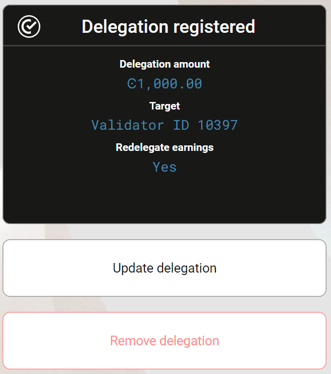

Update delegation to a staking pool or passive delegation#
You can change the delegation amount, target, and preferences on an account. You do not have to change all selections. For example, you might only want to change if rewards are restaked or not.
If you change the delegation, the new amount will be applied at the start of the next pay day. There is one pay day approximately every 24 hours. Note that if you decrease or remove the delegation, there is a cool-down period before the amount you’ve decreased the delegation by is returned to your disposable balance.
Before delegating stake to a staking pool, it is important to research the pool using CCDScan. You can only have one delegation per account.
Note
Any changes made in the last epoch before the upcoming pay day are applied not in the upcoming pay day but the pay day after that.
Note
All transfers and transactions cost a fee, including staking and unstaking transactions. The fee is based on the set NRG for that transaction and the current exchange rate. The cost of transaction fees is stable in Euros, and therefore the price in CCD varies depending on the CCD to EUR exchange rate. The fee will always be deducted from the Balance of the account, so it is important to have some available CCDs to cover fees. A locked-for-staking balance cannot be used to pay for these transactions. You can see the fee in the transaction log.
Warning
Make sure you have enough funds in your disposable balance to cover transaction fees.
Updating delegation from a suspendet validator#
If a validator you’ve delegated to becomes suspended, you’ll see a warning banner in your wallet interface indicating Your validator has been suspended. When a validator is suspended, both the validator and its delegators stop earning rewards. To maintain your earning potential, you may consider moving your delegation to another active validator or to passive delegation.

To update your delegation from a suspended validator, follow the same update process described below for each wallet type.
Update delegation#
CryptoX Concordium Wallet
Tap the account on the accounts screen.
Tap
 on the account balance screen.
on the account balance screen.Now you see your current delegation. Tap Update current delegation.

You can now go through informational screens explaining the update options releated to delegation. Tap Next to navigate through the screens. Tap Skip to proceed directly to updating.
If you want to delegate to a specific pool, tap Validator and enter the validator ID of the desired pool owner. If you want to delegate to passive delegation, tap Passive. Tap Continue.

On the next screen you can see your balance available for delegation and the amount of your current delegation. If you want to change the amount, tap on the field Optional: Type the new amount and enter the amount. Tap Yes, add to restake any rewards or tap No, don’t add if you don’t want to restake rewards. If you do not restake, rewards are deposited to your disposable balance. Tap Continue.

Review the information in the transaction overview. When you are satisfied, tap Submit delegation transaction.
Once the transaction is submitted you see a confirmation screen. Tap Finish to complete the action.
Desktop Wallet
Single signature account
Go to Accounts and select the account on which you want to change your delegation preferences then click More options.
Click Delegation and choose Update Delegation.
You can enter the validator ID for a different staking pool to delegate to or select passive delegation if you prefer that. Click Continue.
You can enter a new amount that you want to delegate and choose whether rewards should be redelegated or not. Click Continue.
A message says Waiting for device. Please connect your Ledger. Connect the LEDGER device to the computer and enter your PIN on the LEDGER device.
Press the right button to navigate to the Concordium app, and then press both buttons to open the app. The LEDGER device says Concordium is ready. Wait for the message Ledger Nano S is ready or Ledger Nano S Plus is ready in the Desktop Wallet and select Submit.
On the LEDGER device, a message says Review transaction. Verify changes you made to any parameters; only changed parameters are shown. Navigate to the right to verify each parameter change.
The LEDGER device says Sign transaction. Press both buttons to sign the transaction. The LEDGER device says Concordium is ready.
In the Desktop Wallet, you can see that the transaction has been submitted to the chain. Select Finish.
Multi signature account
Go to Multi Signature Transactions, select Make new proposal, and then select Update Delegation.
Select the account on which you want to change your delegation preferences.
You can enter the validator ID of a different staking pool to delegate to or select passive if you prefer that. Click Continue. Then you enter a new amount that you want to delegate and choose whether rewards should be redelegated or not. Click Continue.
Set an expiry date and time for your proposal. Consider when you set the expiry time so that the co-signers can return their signatures in time. Select Continue. You can now generate the transaction.
Generate the transaction
There are two ways that you can generate the transaction:
Generate the transaction without signing. This option enables you to export the transaction proposal without signing it. You don’t need a LEDGER device but you do need an internet connection.
Generate and sign the transaction This option requires a LEDGER device and an internet connection.
In combination, these two options enable you to distribute the responsibility of creating and signing transfers among more people. You can, for example, have one person create the proposal and another one sign the proposal. It also makes it possible for you to sign the transaction on the LEDGER device in a different location than where the proposal was created.
Generate the transaction without signing
Verify that the Transaction details are as you intended, and then select I am sure that the proposed changes are correct.
Select Generate without signing. You can now export the proposal.
Generate and sign the transaction on the LEDGER device
If you haven’t connected the LEDGER device, there’s a message in the Desktop Wallet saying Waiting for connection until you connect the LEDGER device. Enter your PIN code on the LEDGER device. Press the buttons above the up and down arrows to choose a digit, and then press both buttons to select the digit.
Wait for the message in the Desktop Wallet saying Open the Concordium application on your Ledger Nano S or Open the Concordium application on your Ledger Nano S Plus. On the LEDGER device, press the right button to navigate to the Concordium app, and then press both buttons to open the app. The LEDGER device says Concordium is ready. Wait for the message in the Desktop Wallet saying LEDGER device is ready.
In the Desktop Wallet, Verify that the Transaction details are as you intended, select I am sure that the proposed changes are correct, and then select Generate and Sign.
On the LEDGER device, there’s a message saying Review transaction. Verify changes you made to any parameters; only changed parameters are shown. Navigate to the right to verify each parameter change.
The LEDGER device says Sign transaction. Press both buttons to sign the transaction. The LEDGER device says Concordium is ready.
Note
If you want to decline the transaction, press the right button on the LEDGER device. The hardware wallet now says Decline to sign transaction. Press both buttons to decline. In the Desktop Wallet, there’s a message saying The action was declined on the Ledger device. Please try again.
In the Desktop Wallet, you can now see Transaction details, Signatures, and Security & Submission Details, which include the status of the transaction, the identicon, and the transaction hash. If you have all the required signatures, you can submit the transaction to the chain, otherwise, you’ll have to export the proposal and receive signatures from the co-signers.
Export proposal
If more than one signature is needed to sign off on the proposal, you have to share a file of the type JSON, which contains the transaction information, with the co-signers.
In the Desktop Wallet, select Export transaction proposal.
Navigate to the location on your computer where you want to save the file. If you’re on Windows make sure that All Files is selected in Save as type. Give the file a name and the extension .json, and then click Save.
You have to export the transaction proposal and send it to the co-signer through a secure channel. Optionally, you can also send the Identicon to the co-signers through a different secure channel.
Receive signatures from co-signers
When the co-signers have signed the transaction, they return the signed transaction proposal to you, and you have to import the files into the Desktop Wallet before you can submit the transaction to the chain.
If you’re still on the same page, go to step 3. If you left the page with the account transaction, go to Multi-signature Transactions, and then select Your proposed transactions.
Select the transaction that you want to submit to the chain. You can see an overview of the transaction details and an overview of the signatures. You can also see that the status of the transaction is Unsubmitted, and you can see the identicon and the transaction hash.
Select Browse to file and then navigate to the location on your computer where you saved the signed transaction files. Select the relevant files, and then select OK. The files are uploaded to the Desktop Wallet and added to the list of signatures. Alternatively, you can drag and drop the signature files from their location on the computer and onto the Desktop Wallet.
Submit the transaction to the blockchain
When you have received and added all the required signatures, you can submit the transaction to the blockchain.
Review the transaction details carefully to ensure that all information is correct.
Select I understand this is the final submission and that it cannot be reverted.
If you don’t want to submit the transaction to the chain, you can select Cancel. The proposal is no longer active. However, it is still visible in the list of proposals.
Select Submit transaction to chain. The transaction is submitted to the chain and finalized on the ledger.
Select Finish to leave the page.
Concordium Wallet for Web
In the dropdown list, select the delegating account and click Earn.
Click Update.
On the next screen, you can modify delegation preferences. Select Validator to delegate to a specific validator pool of your choice, select Passive to use passive delegation. Click Continue to proceed.
On the next screen, you can make any desired changes to your delegation amount and change your restake rewards options. Click Continue to proceed.
Review the information including your delegation amount, and commission rates. When you’re satisfied with the configuration, click Send to finalize the transaction.
The wallet shows a confirmation screen with a green checkmark indicating that your delegation settings have been successfully updated. You can click Transaction details to view more information about the transaction, or Return to account to return to your account overview.


{kind=link}
{kind=link}
{kind=link}
{kind=link}
{kind=link}
{kind=link}
{kind=link}